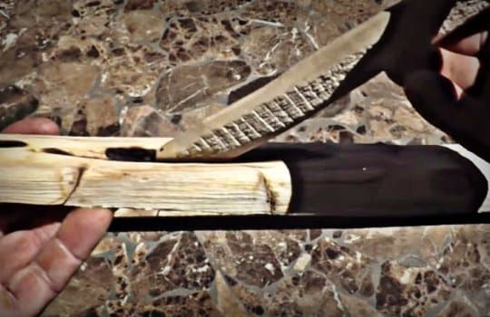

Fire Plow
The third way on how to start a fire with sticks is by employing a fire plow setup.
A fire plow uses the same physics of friction but in a slightly different way.
With a plow, the necessary friction develops from sliding back-and-forth, instead of rotational.
So to accommodate sliding, you create a trough in your fireboard.
This trough is where you place the tip of your stick.
Then you push and pull the tip of the stick down into the fireboard at a 45-degree angle. So the pressure slides the stick along the trough.
Doing this quickly, repeatedly, and forcefully, creates the friction build-up necessary to create a hot ember.
Everything else from preparation to “working up the fire ladder” is essentially the same.